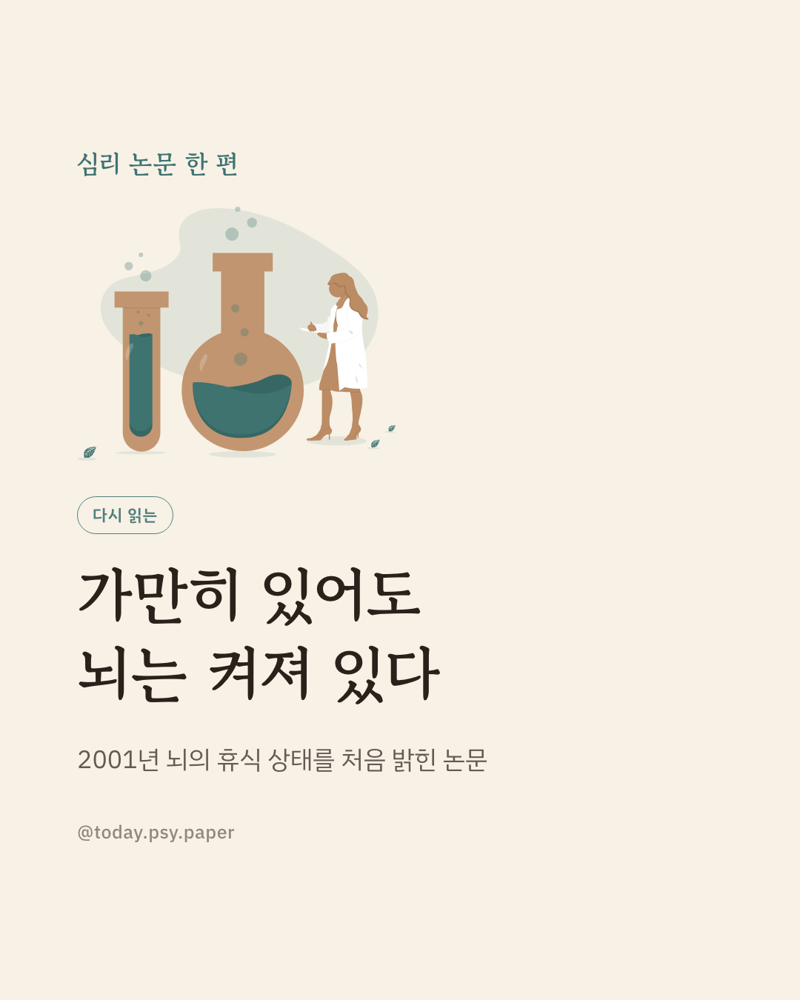
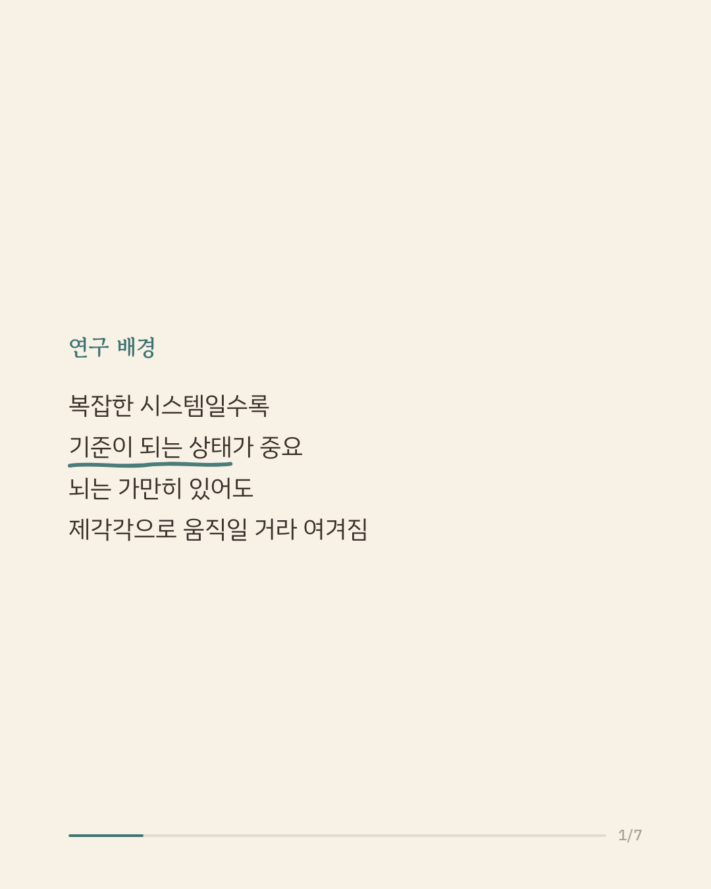
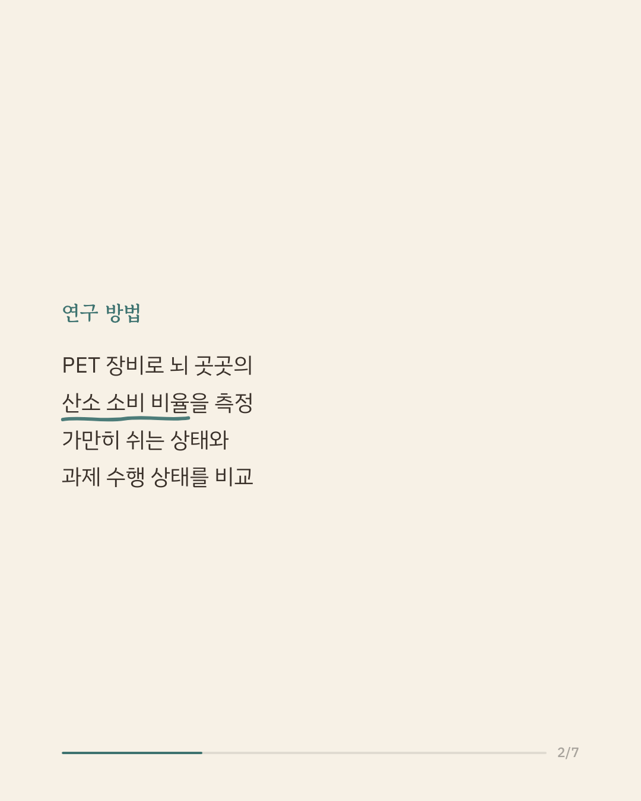
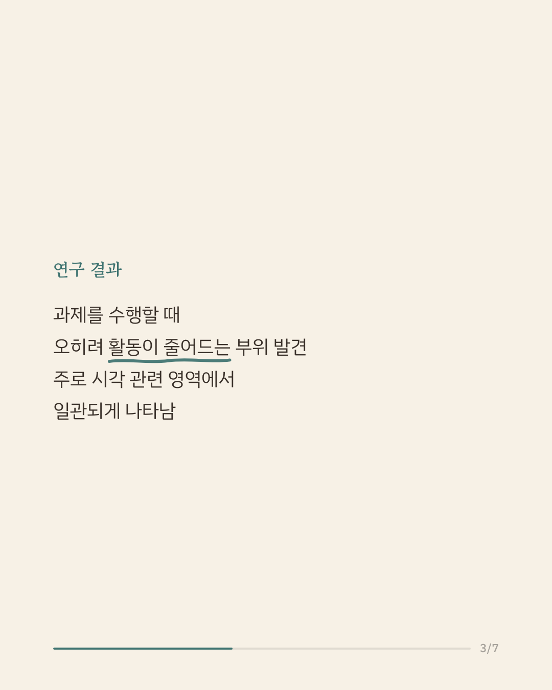
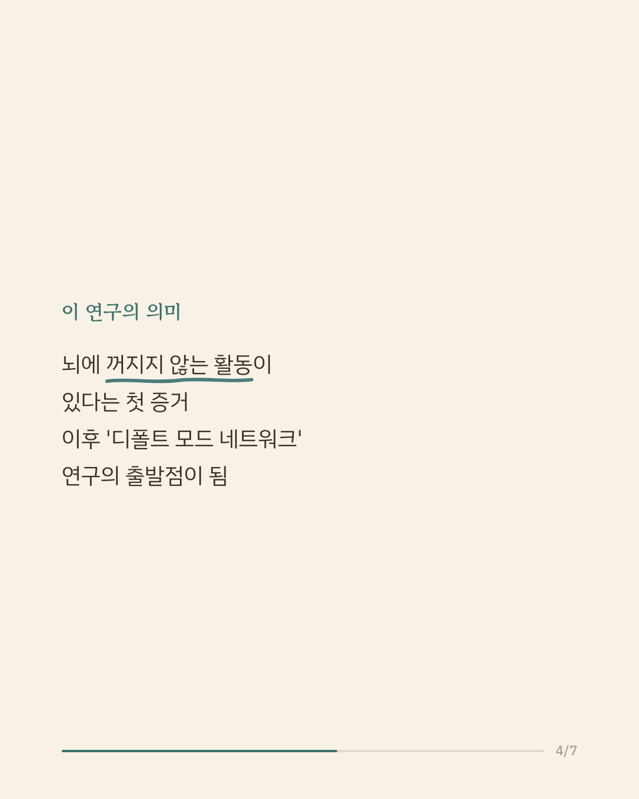
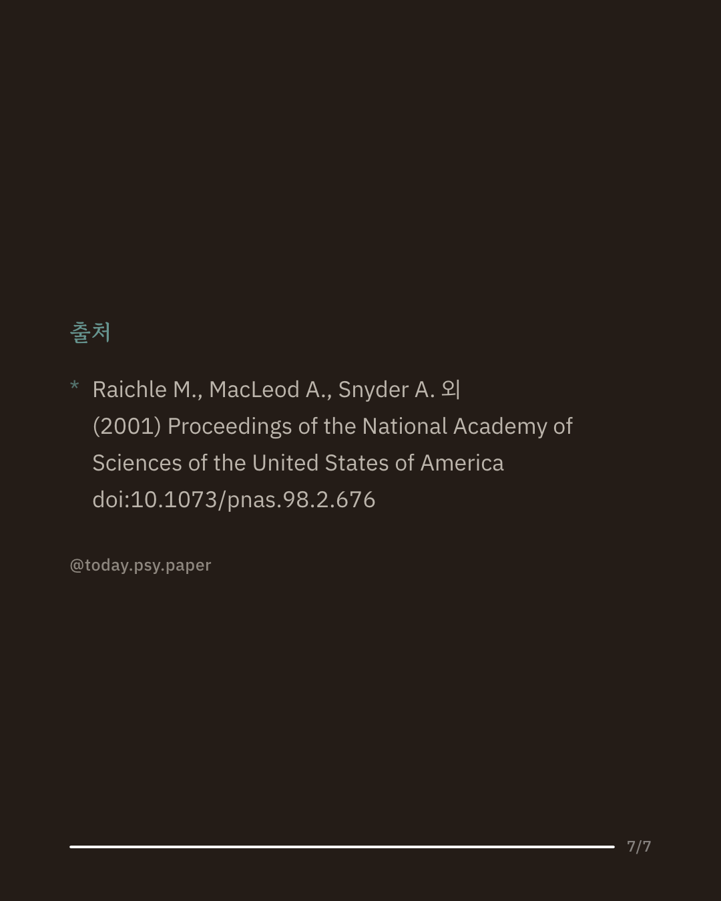

복잡한 시스템을 이해하려면 먼저 기준이 되는 상태가 무엇인지부터 알아야 합니다. 사람의 뇌처럼 복잡한 대상에서는, 가만히 쉬고 있을 때 뇌가 어떤 상태인지조차 알기 어려웠습니다. 이 논문은 양전자 방출 단층촬영(PET)을 이용해 눈을 감고 쉬는 상태의 뇌를 처음으로 정밀하게 들여다봤습니다. 연구진은 뇌 곳곳에서 혈류로 공급된 산소 중 실제로 쓰인 비율을 측정했습니다. 그 결과 특정 과제를 수행할 때 오히려 활동이 줄어드는 영역들이 발견됐고, 이 감소는 주로 시각과 관련된 영역에서 일관되게 나타났습니다. 이 발견은 뇌에 과제와 무관하게 유지되는 기본 활동 상태가 있고, 이 상태가 특정 행동을 할 때 일시적으로 꺼진다는 것을 시사합니다. 이후 이 아이디어는 '디폴트 모드 네트워크' 연구로 이어져 지금의 뇌과학 지형을 만들었습니다. 다만 당시 PET 기술의 한계 안에서 얻은 결과이며, 단일 연구이므로 확대 해석은 조심해야 합니다. 출처: Proceedings of the National Academy of Sciences (2001), 'A default mode of brain function' #뇌과학 #신경과학 #디폴트모드네트워크 #뇌과학상식 #심리학연구
python3 publish.py 11209064